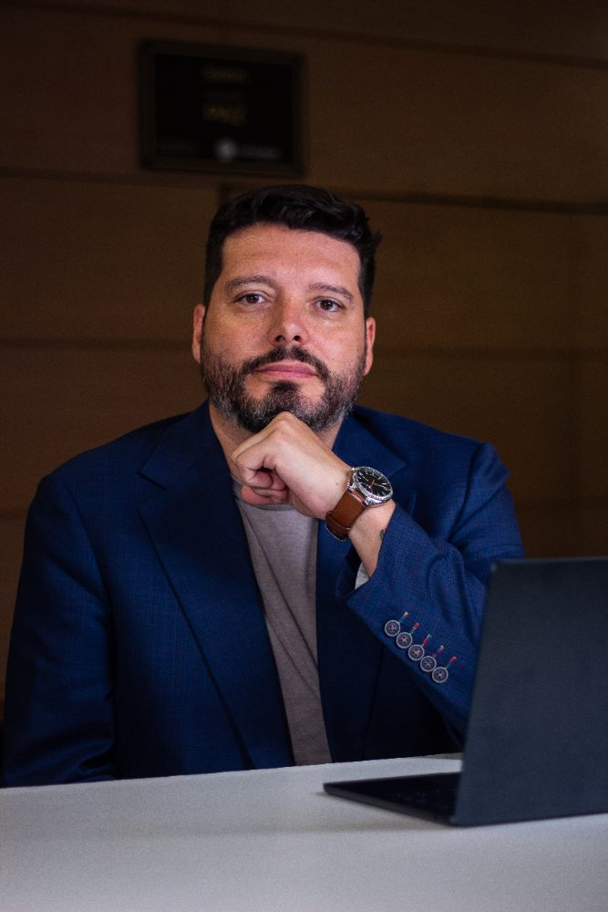
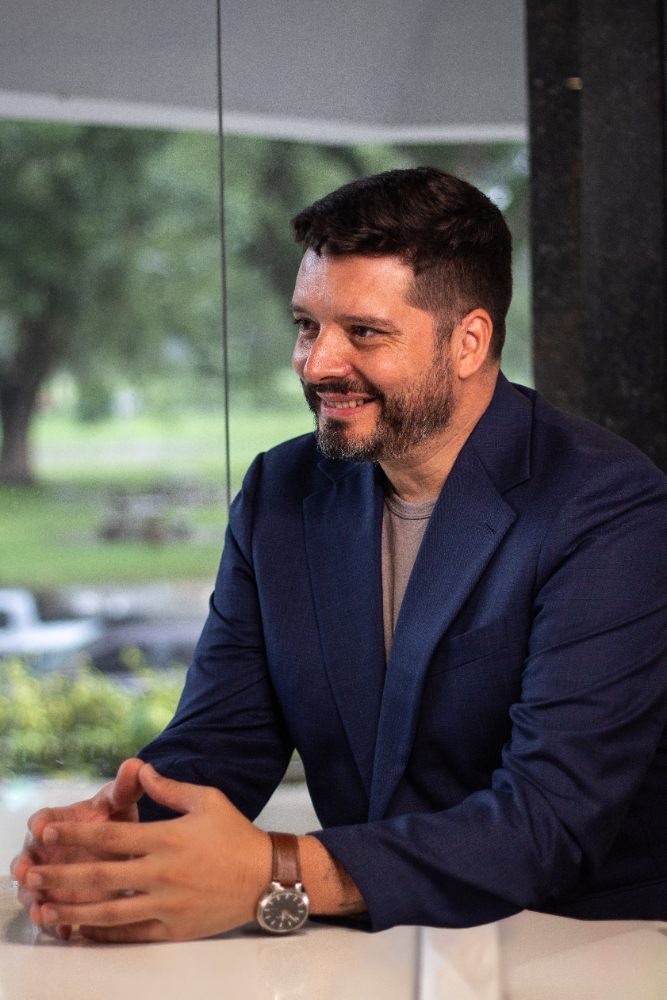

01 Nuevo Contrato Social
Argentina necesita un Nuevo Contrato Social.
Diseño los sistemas que no se pueden caer. Esta es una propuesta para que las cuentas del Estado estén a la vista de todos.
Datos abiertos Estado medible Cuentas claras
01/07


Alvar TorresUn Estado abierto e innovador
No hay millones de corruptos.
Hay un sistema mal diseñado.